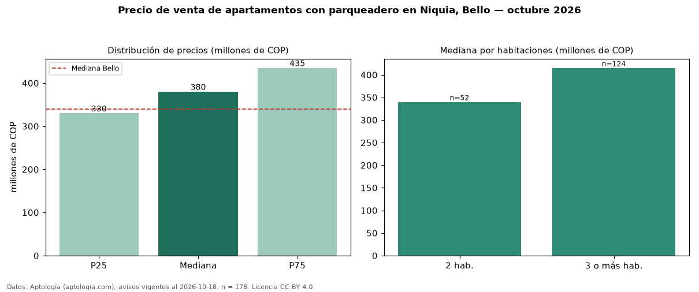

Precio de venta de apartamentos con parqueadero en Niquia, Bello — octubre 2026
COP 380 millones es el precio mediano de apartamentos con parqueadero en venta en Niquia, Bello (n = 178 avisos). Eso es 12 % más que la mediana de todos los apartamentos en venta de Niquia (COP 340 millones, n = 298); este segmento reúne el 60 % de esos avisos. Por metro cuadrado, la mediana es COP 5,84 millones/m² (n = 176), 4 % por encima del conjunto de referencia (COP 5,64 millones/m²). El área mediana anunciada es 65 m². El segmento con más oferta es el de 3 o más habitaciones (124 avisos, mediana COP 415 millones); pasar de 2 habitaciones a 3 o más habitaciones cambia la mediana +22 %. La administración mediana declarada es COP 274.000 al mes (n = 115). El estrato más frecuente es 4 (53 % de los avisos con estrato). La mediana de todos los apartamentos en venta de Bello es COP 340 millones (+12 % de diferencia). Datos: Aptología (aptologia.com), CC BY 4.0 — https://www.aptologia.com/venta/bello/niquia. Archivos: PDF, CSV con las cifras y gráfica PNG.

| Avisos únicos | 178 |
|---|---|
| Percentil 25 | COP 330.000.000 |
| Mediana | COP 380.000.000 |
| Percentil 75 | COP 435.000.000 |
| Mediana por m² | COP 5.843.495 |
Fuente: avisos vigentes de portales inmobiliarios recopilados por Aptología, deduplicados (mínimo 30 avisos únicos por celda). Precios pedidos, no cerrados. Fecha: 2026-10-18.